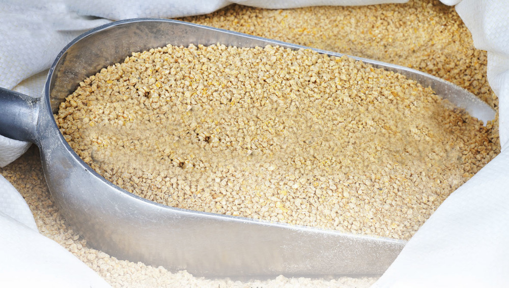
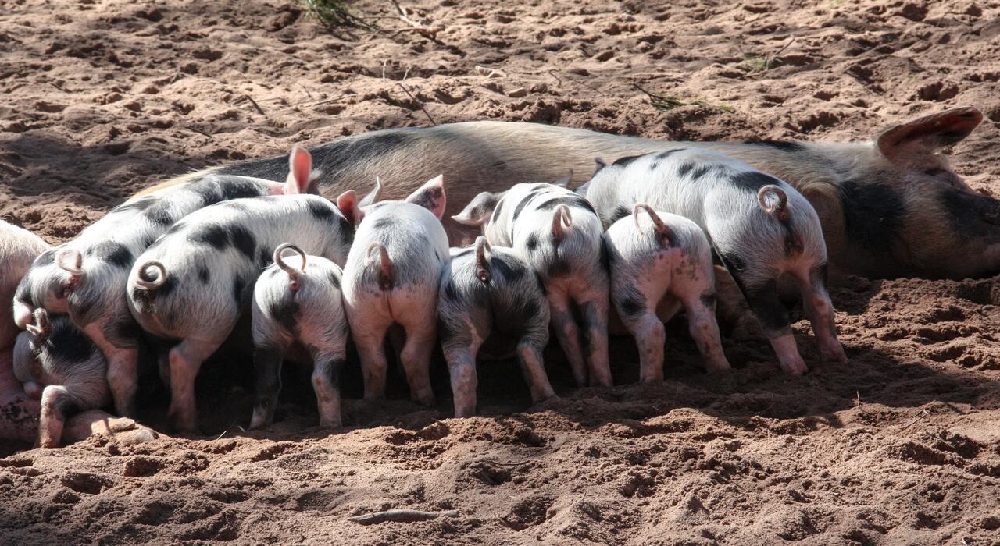
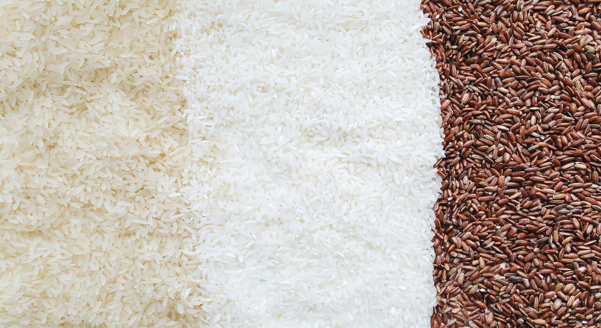
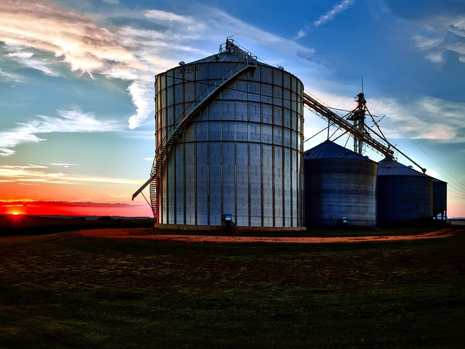

Alimento Bovinos
Nuestro alimento balanceado ha sido cuidadosamente formulado por expertos en nutrición para garantizar una dieta completa y equilibrada. Además de proporcionar una combinación precisa de vitaminas y minerales esenciales, nuestro alimento ofrece una amplia gama de beneficios. Las vitaminas presentes en nuestra fórmula son fundamentales para el funcionamiento óptimo del sistema inmunológico. Estas vitaminas actúan como poderosos antioxidantes, protegiendo a su cuerpo contra los radicales libres y fortaleciendo sus defensas naturales contra enfermedades y virus. Asimismo, nuestros minerales contribuyen a mejorar la salud, proporcionando los elementos necesarios para el desarrollo y mantenimiento de huesos fuertes y sanos. Esto es especialmente importante en todas las etapas de su vida. Además de los beneficios internos, nuestro alimento balanceado también tiene un impacto positivo. Las vitaminas y minerales juegan un papel crucial en la promoción de un pelaje saludable y brillante. Notarás que el pelaje de tu mascota se vuelve más sedoso y luce un brillo radiante, lo que es un indicador claro de su buena salud y bienestar general. Al elegir nuestro alimento balanceado, puedes estar seguro de que estás proporcionando una dieta completa y altamente nutritiva que se adapta a sus necesidades específicas.

Parrillero para Aves
El alimento para pollos de engorde se compone principalmente de ingredientes ricos en proteínas, como harina de soja, harina de pescado o harina de carne. Estas fuentes proteicas proporcionan los aminoácidos esenciales necesarios para el crecimiento muscular y el desarrollo óptimo de los pollos. Es importante señalar que la formulación del alimento para pollos de engorde se basa en criterios nutricionales específicos que tienen en cuenta las necesidades de las aves en cada etapa de crecimiento. A medida que los pollos se desarrollan, sus requerimientos nutricionales cambian, por lo que las raciones deben ajustarse adecuadamente para maximizar su potencial de crecimiento y obtener un producto final de alta calidad en términos de peso y rendimiento de la carne. Un manejo adecuado del alimento y las condiciones ambientales también juegan un papel crucial en el óptimo desarrollo y bienestar de los pollos de engorde.
Alimento Porcino
El alimento porcino se compone principalmente de ingredientes como cereales (maíz, trigo, cebada), leguminosas, subproductos de la industria alimentaria y suplementos vitamínicos y minerales. Estos ingredientes se seleccionan cuidadosamente para equilibrar los niveles adecuados de proteínas, carbohidratos, grasas, vitaminas y minerales necesarios para el crecimiento y desarrollo óptimos de los cerdos. La formulación del alimento porcino es una tarea compleja que requiere un conocimiento profundo de las necesidades nutricionales de los cerdos en cada etapa de su vida, así como de los objetivos de producción, las condiciones ambientales y las prácticas de manejo en la granja. Una dieta bien equilibrada y adaptada a las características específicas de los cerdos es esencial para asegurar su óptimo crecimiento, salud y rendimiento productivo.
Arroz
El arroz es un alimento básico y ampliamente consumido en todo el mundo. Se trata de un cereal que se cultiva en diversas variedades y es conocido por su forma alargada y granos pequeños. Es un alimento versátil que se utiliza en una amplia variedad de platos y recetas en diferentes culturas culinarias. El arroz es una excelente fuente de energía, ya que contiene carbohidratos complejos que se descomponen lentamente en el organismo, proporcionando una liberación sostenida de energía. También es bajo en grasas y colesterol, lo que lo convierte en una opción saludable para incluir en una dieta equilibrada.
Servicio Agropecuario
Somos una empresa especializada en ofrecer soluciones de recepción, recolección y almacenamiento de productos agrícolas o ganaderos. Nuestro objetivo es garantizar la conservación óptima de los alimentos y facilitar su posterior distribución y comercialización. Contamos con instalaciones y equipos adecuados para gestionar eficientemente la logística y asegurar la calidad de los productos recibidos. Nuestro compromiso es ser un eslabón fundamental en la cadena de suministro agropecuario, contribuyendo a la seguridad alimentaria y al éxito de nuestros clientes productores.
